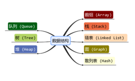

数据结构
数据结构是计算机存储、组织数据的方式。数据结构是指相互之间存在一种或多种特定关系的数据元素的集合。 通常情况下，精心选择的数据结构可以带来更高的运行或者存储效率。数据结构往往同高效的检索算法和索引技术有关。
数据结构是指相互之间存在着一种或多种关系的数据元素的集合和该集合中数据元素之间的关系组成。记为：Data_Structure=(D,R) 其中D是数据元素的集合，R是该集合中所有元素之间的关系的有限集合。
Sartaj Sahni在他的《数据结构、算法与应用》一书中称：“数据结构是数据对象，以及存在于该对象的实例和组成实 例的数据元素之间的各种联系。
这些联系可以通过定义相关的函数来给出。”他将数据对象（data object）定义为“一个数据对象是实例或值的集合”。
Clifford A.Shaffer在《数据结构与算法分析》一书中的定义是：“数据结构是ADT（抽象数据类型Abstract Data Type） 的物理实现。”
Robert L.Kruse在《数据结构与程序设计》一书中，将一个数据结构的设计过程分成抽象层、数据结构层和实现层。其中，抽象层是指抽象数据类型层，
它讨论数据的逻辑结构及其运算，数据结构层和实现层讨论一个数据结构的表示和在计算机内的存储细节以及运算的实现。
数据结构具体指同一类数据元素中，各元素之间的相互关系，包括三个组成成分，数据的逻辑结构，数据的存储结构和数据运算结构。
一、数据的逻辑结构：指反映数据元素之间的逻辑关系的数据结构，其中的逻辑关系是指数据元素之间的前后件关系，而与他们在计算机中的存储位置无关。逻辑结构包括：
1. 集合
数据结构中的元素之间除了“同属一个集合” 的相互关系外，别无其他关系；
2.线性结构
数据结构中的元素存在一对一的相互关系；
3.树形结构
数据结构中的元素存在一对多的相互关系；
4.图形结构
数据结构中的元素存在多对多的相互关系。
二、数据的物理结构：指数据的逻辑结构在计算机存储空间的存放形式。[1]
数据的物理结构是数据结构在计算机中的表示（又称映像），它包括数据元素的机内表示和关系的机内表示。由于具体实现的方法有顺序、链接、索引、散列等多种，
所以，一种数据结构可表示成一种或多种存储结构。
数据元素的机内表示（映像方法）： 用二进制位（bit）的位串表示数据元素。通常称这种位串为节点（node）。当数据元素有若干个数据项组成时，位串中与个数据项对应的子位串称为数据域（data field）。
因此，节点是数据元素的机内表示（或机内映像）。
关系的机内表示（映像方法）：数据元素之间的关系的机内表示可以分为顺序映像和非顺序映像，常用两种存储结构：顺序存储结构和链式存储结构。
顺序映像借助元素在存储器中的相对位置来表示数据元素之间的逻辑关系。非顺序映像借助指示元素存储位置的指针（pointer）来表示数据元素之间的逻辑关系。
三、数据结构的运算。
一般认为，一个数据结构是由数据元素依据某种逻辑联系组织起来的。对数据元素间逻辑关系的描述称为数据的逻辑结构；数据必须在计算机内存储，数据的存储结构是数据结构的实现形式，
是其在计算机内的表示；此外讨论一个数据结构必须同时讨论在该类数据上执行的运算才有意义。一个逻辑数据结构可以有多种存储结构，且各种存储结构影响数据处理的效率。
在许多类型的程序的设计中，数据结构的选择是一个基本的设计考虑因素。许多大型系统的构造经验表明，系统实现的困难程度和系统构造的质量都严重的依赖于是否选择了最优的数据结构。许多时候，确定了数据结构后，
算法就容易得到了。有些时候事情也会反过来，我们根据特定算法来选择数据结构与之适应。不论哪种情况，选择合适的数据结构都是非常重要的。
选择了数据结构，算法也随之确定，是数据而不是算法是系统构造的关键因素。这种洞见导致了许多种软件设计方法和程序设计语言的出现，面向对象的程序设计语言就是其中之一。
在计算机科学中，数据结构是一门研究非数值计算的程序设计问题中计算机的操作对象（数据元素）以及它们之间的关系和运算等的学科，
而且确保经过这些运算后所得到的新结构仍然是原来的结构类型。
“数据结构”作为一门独立的课程在国外是从1968年才开始设立的。 1968年美国唐纳德·克努特（Donald Ervin Knuth）教授开创了数据结构的最初体系，
他所著的《计算机程序设计艺术》第一卷《基本算法》是第一本较系统地阐述数据的逻辑结构和存储结构及其操作的著作。“数据结构”在计算机科学中是一门综合性的专业基础课，
数据结构是介于数学、计算机硬件和计算机软件三者之间的一门核心课程。
数据结构这一门课的内容不仅是一般程序设计（特别是非数值性程序设计）的基础，而且是设计和实现编译程序、操作系统、数据库系统及其他系统程序的重要基础。
计算机科学是一门研究用计算机进行信息表示和处理的科学。这里面涉及到两个问题：信息的表示，信息的处理 。
而信息的表示和组织又直接关系到处理信息的程序的效率。随着计算机的普及，信息量的增加，信息范围的拓宽，使许多系统程序和应用程序的规模很大，结构又相当复杂。
因此，为了编写出一个“好”的程序，必须分析待处理的对象的特征及各对象之间存在的关系，这就是数据结构这门课所要研究的问题。众所周知，计算机的程序是对信息进行加工处理。
在大多数情况下，这些信息并不是没有组织，信息（数据）之间往往具有重要的结构关系，这就是数据结构的内容。数据的结构，直接影响算法的选择和效率。
计算机解决一个具体问题时，大致需要经过下列几个步骤：首先要从具体问题中抽象出一个适当的数学模型，
然后设计一个解此数学模型的算法（Algorithm），最后编出程序、进行测试、调整直至得到最终解答。
寻求数学模型的实质是分析问题，从中提取操作的对象，并找出这些操作对象之间含有的关系，然后用数学的语言加以描述。当人们用计算机处理数值计算问题是，所用的数学模型是用数学方程描述。
所涉及的运算对象一般是简单的整形、实型和逻辑型数据，因此程序设计者的主要精力集中于程序设计技巧上，而不是数据的存储和组织上。
然而，计算机应用的更多领域是“非数值型计算问题”，它们的数学模型无法用数学方程描述，而是用数据结构描述，解决此类问题的关键是设计出合适的数据结构，
描述非数值型问题的数学模型是用线性表、树、图等结构来描述的。
计算机算法与数据的结构密切相关，算法无不依附于具体的数据结构，数据结构直接关系到算法的选择和效率。运算是由计算机来完成，这就要设计相应的插入、删除和修改的算法 。
也就是说，数据结构还需要给出每种结构类型所定义的各种运算的算法。
数据是信息的载体，是可以被计算机识别存储并加工处理的描述客观事物的信息符号的总称。所有能被输入计算机中，且能被计算机处理的符号的集合，它是计算机程序加工处理的对象。
客观事物包括数值、字符、声音、图形、图像等，它们本身并不是数据，只有通过编码变成能被计算机识别、存储和处理的符号形式后才是数据。
数据元素是数据的基本单位，在计算机程序中通常作为一个整体考虑。一个数据元素由若干个数据项组成。数据项是数据结构中讨论的最小单位。
有两类数据元素：若数据元素可再分，则每一个独立的处理单元就是数据项，数据元素是数据项的集合；若数据元素不可再分，则数据元素和数据项是同一概念，
如：整数"5"，字符 "N" 等。例如描述一个学生的信息的数据元素可由下列6个数据项组成。其中的出生日期又可以由三个数据项："年"、"月"和"日"组成，则称"出生日期"为组合项，
而其它不可分割的数据项为原子项。
关键字指的是能识别一个或多个数据元素的数据项。若能起唯一识别作用，则称之为 "主" 关键字，否则称之为 "次" 关键字。
数据对象是性质相同的数据元素的集合，是数据的一个子集。数据对象可以是有限的，也可以是无限的。
数据处理是指对数据进行查找、插入、删除、合并、排序、统计以及简单计算等的操作过程。在早期，计算机主要用于科学和工程计算，进入八十年代以后，
计算机主要用于数据处理。据有关统计资料表明，计算机用于数据处理的时间比例达到80%以上，随着时间的推移和计算机应用的进一步普及，计算机用于数据处理的时间比例必将进一步增大。
数据结构是指同一数据元素类中各数据元素之间存在的关系。数据结构分别为逻辑结构、存储结构（物理结构）和数据的运算。
数据的逻辑结构是从具体问题抽象出来的数学模型，是描述数据元素及其关系的数学特性的，有时就把逻辑结构简称为数据结构。
逻辑结构是在计算机存储中的映像，形式地定义为（K，R）（或（D，S）），其中，K是数据元素的有限集，R是K上的关系的有限集。
根据数据元素间关系的不同特性，通常有下列四类基本的结构： ⑴集合结构。该结构的数据元素间的关系是“属于同一个集合”。
⑵线性结构。该结构的数据元素之间存在着一对一的关系。 ⑶树型结构。该结构的数据元素之间存在着一对多的关系。 ⑷图形结构。
该结构的数据元素之间存在着多对多的关系，也称网状结构。 从上面所介绍的数据结构的概念中可以知道，
一个数据结构有两个要素。一个是数据元素的集合，另一个是关系的集合。在形式上，数据结构通常可以采用一个二元组来表示。
数据结构的形式定义为：数据结构是一个二元组 ：Data_Structure=（D，R），其中，D是数据元素的有限集，R是D上关系的有限集。
线性结构的特点是数据元素之间是一种线性关系，数据元素“一个接一个的排列”。在一个线性表中数据元素的类型是相同的，或者说线性表是由同一类型的数据元素构成的线性结构。
在实际问题中线性表的例子是很多的，如学生情况信息表是一个线性表：表中数据元素的类型为学生类型; 一个字符串也是一个线性表：表中数据元素的类型为字符型，等等。
线性表是最简单、最基本、也是最常用的一种线性结构。 线性表是具有相同数据类型的n(n>=0)个数据元素的有限序列，通常记为： (a1，a2，… ai-1，ai，ai+1，…an) ，
其中n为表长， n=0 时称为空表。 它有两种存储方法：顺序存储和链式存储，它的主要基本操作是插入、删除和检索等。
数据结构在计算机中的表示（映像）称为数据的物理（存储）结构。它包括数据元素的表示和关系的表示。
数据元素之间的关系有两种不同的表示方法：顺序映象和非顺序映象，并由此得到两种不同的存储结构：顺序存储结构和链式存储结构。
顺序存储方法：它是把逻辑上相邻的结点存储在物理位置相邻的存储单元里，结点间的逻辑关系由存储单元的邻接关系来体现，
由此得到的存储表示称为顺序存储结构。顺序存储结构是一种最基本的存储表示方法，通常借助于程序设计语言中的数组来实现。
链接存储方法：它不要求逻辑上相邻的结点在物理位置上亦相邻，结点间的逻辑关系是由附加的指针字段表示的。
由此得到的存储表示称为链式存储结构，链式存储结构通常借助于程序设计语言中的指针类型来实现
索引存储方法：除建立存储结点信息外，还建立附加的索引表来标识结点的地址。
散列存储方法：就是根据结点的关键字直接计算出该结点的存储地址。
数据结构中，逻辑上（逻辑结构：数据元素之间的逻辑关系）可以把数据结构分成线性结构和非线性结构。线性结构的顺序存储结构是一种顺序存取的存储结构，
线性表的链式存储结构是一种随机存取的存储结构。线性表若采用链式存储表示时所有结点之间的存储单元地址可连续可不连续。
逻辑结构与数据元素本身的形式、内容、相对位置、所含结点个数都无关。
算法的设计取决于数据（逻辑）结构，而算法的实现依赖于采用的存储结构。数据的存储结构实质上是它的逻辑结构在计算机存储器中的实现，
为了全面的反映一个数据的逻辑结构，它在存储器中的映象包括两方面内容，即数据元素之间的信息和数据元素之间的关系。不同数据结构有其相应的若干运算。
数据的运算是在数据的逻辑结构上定义的操作算法，如检索、插入、删除、更新和排序等。
数据的运算是数据结构的一个重要方面，讨论任一种数据结构时都离不开对该结构上的数据运算及其实现算法的讨论。
数据结构不同于数据类型，也不同于数据对象，它不仅要描述数据类型的数据对象，而且要描述数据对象各元素之间的相互关系。
数据类型是一个值的集合和定义在这个值集上的一组操作的总称。数据类型可分为两类：原子类型、结构类型。一方面，
在程序设计语言中，每一个数据都属于某种数据类型。类型明显或隐含地规定了数据的取值范围、存储方式以及允许进行的运算。
可以认为，数据类型是在程序设计中已经实现了的数据结构。另一方面，在程序设计过程中，当需要引入某种新的数据结构时，总是借助编程语言所提供的数据类型来描述数据的存储结构。
计算机中表示数据的最小单位是二进制数的一位，叫做位。我们用一个由若干位组合起来形成的一个位串表示一个数据元素，
通常称这个位串为元素或结点。当数据元素由若干数据项组成时，位串中对应于各个数据项的子位串称为数据域。元素或结点可看成是数据元素在计算机中的映象。
一个软件系统框架应建立在数据之上，而不是建立在操作之上。一个含抽象数据类型的软件模块应包含定义、表示、实现三个部分。
对每一个数据结构而言，必定存在与它密切相关的一组操作。若操作的种类和数目不同，即使逻辑结构相同，数据结构能起的作用也不同。
不同的数据结构其操作集不同，但下列操作必不可缺：
1,结构的生成；
2.结构的销毁；
3,在结构中查找满足规定条件的数据元素；
4,在结构中插入新的数据元素；
5,删除结构中已经存在的数据元素；
6,遍历。
抽象数据类型：一个数学模型以及定义在该模型上的一组操作。抽象数据类型实际上就是对该数据结构的定义。
因为它定义了一个数据的逻辑结构以及在此结构上的一组算法。抽象数据类型可用以下三元组表示：（D，S，P）。D是数据对象，S是D上的关系集，P是对D的基本操作集。ADT的定义为：
ADT 抽象数据类型名：{数据对象：（数据元素集合），数据关系：（数据关系二元组结合），基本操作：（操作函数的罗列）}； ADT抽象数据类型名;抽象数据类型有两个重要特性：
数据抽象
用ADT描述程序处理的实体时，强调的是其本质的特征、其所能完成的功能以及它和外部用户的接口（即外界使用它的方法）。
数据封装
将实体的外部特性和其内部实现细节分离，并且对外部用户隐藏其内部实现细节。
数据（Data）是信息的载体，它能够被计算机识别、存储和加工处理。它是计算机程序加工的原料，应用程序处理各种各样的数据。
计算机科学中，所谓数据就是计算机加工处理的对象，它可以是数值数据，也可以是非数值数据。数值数据是一些整数、实数或复数，
主要用于工程计算、科学计算和商务处理等；非数值数据包括字符、文字、图形、图像、语音等。数据元素（Data Element）是数据的基本单位。
在不同的条件下，数据元素又可称为元素、结点、顶点、记录等。例如，学生信息检索系统中学生信息表中的一个记录等，都被称为一个数据元素。
有时，一个数据元素可由若干个数据项（Data Item）组成，例如，学籍管理系统中学生信息表的每一个数据元素就是一个学生记录。
它包括学生的学号、姓名、性别、籍贯、出生年月、成绩等数据项。这些数据项可以分为两种：一种叫做初等项，如学生的性别、籍贯等，
这些数据项是在数据处理时不能再分割的最小单位；另一种叫做组合项，如学生的成绩，它可以再划分为数学、物理、化学等更小的项。通常，
在解决实际应用问题时是把每个学生记录当作一个基本单位进行访问和处理的。
数据对象（Data Object）或数据元素类（Data Element Class）是具有相同性质的数据元素的集合。在某个具体问题中，数据元素都具有相同的性质（元素值不一定相等），
属于同一数据对象（数据元素类），数据元素是数据元素类的一个实例。例如，在交通咨询系统的交通网中，所有的顶点是一个数据元素类，顶点A和顶点B各自代表一个城市，
是该数据元素类中的两个实例，其数据元素的值分别为A和B。 数据结构（Data Structure）是指互相之间存在着一种或多种关系的数据元素的集合。
在任何问题中，数据元素之间都不会是孤立的，在它们之间都存在着这样或那样的关系，这种数据元素之间的关系称为结构。
在程序设计中，为了处理方便， 把具有相同类型的若干变量按有序的形式组织起来。这些按序排列的同类数据元素的集合称为数组。在C语言中， 数组属于构造数据类型。 一个数组可以分解为多个数组元素，这些数组元素可以是基本数据类型或是构造类型。因此按数组元素的类型不同，数组又可分为数值数组、字符数组、指针数组、结构数组等各种类别。
是只能在某一端插入和删除的特殊线性表。它按照先进后出的原则存储数据， 先进入的数据被压入栈底，最后的数据在栈顶，需要读数据的时候从栈顶开始弹出数据（最后一个数据被第一个读出来）。
一种特殊的线性表，它只允许在表的前端（front）进行删除操作，而在表的后端（rear）进行插入操作。进行插入操作的端称为队尾， 进行删除操作的端称为队头。队列是按照“先进先出”或“后进后出”的原则组织数据的。队列中没有元素时，称为空队列。
是一种物理存储单元上非连续、非顺序的存储结构，它既可以表示线性结构，也可以用于表示非线性结构，数据元素的逻辑顺序是通过链表中的指针链接次序实现的。 链表由一系列结点（链表中每一个元素称为结点）组成，结点可以在运行时动态生成。每个结点包括两个部分：一个是存储数据元素的数据域，另一个是存储下一个结点地址的指针域。
是包含n（n>0）个结点的有穷集合K，且在K中定义了一个关系N，N满足 以下条件：
（1）有且仅有一个结点 K0，他对于关系N来说没有前驱，称K0为树的根结点。简称为根（root）。
（2）除K0外，K中的每个结点，对于关系N来说有且仅有一个前驱。
（3）K中各结点，对关系N来说可以有m个后继（m>=0）。
图是由结点的有穷集合V和边的集合E组成。其中，为了与树形结构加以区别，在图结构中常常将结点称为顶点， 边是顶点的有序偶对，若两个顶点之间存在一条边，就表示这两个顶点具有相邻关系。
在计算机科学中，堆是一种特殊的树形数据结构，每个结点都有一个值。通常我们所说的堆的数据结构， 是指二叉堆。堆的特点是根结点的值最小（或最大），且根结点的两个子树也是一个堆。
若结构中存在关键字和K相等的记录，则必定在f(K)的存储位置上。由此，不需比较便可直接取得所查记录。 称这个对应关系f为散列函数(Hash function)，按这个思想建立的表为散列表。